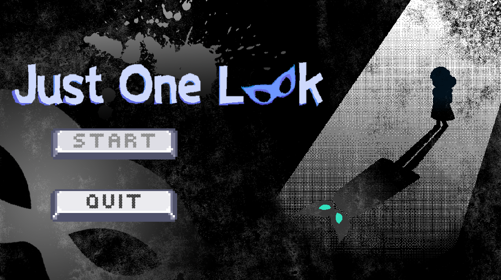

Introduction
I have participated in the Global Game Jam 2026, and Just One Look is the game I made for the event.
I worked alongside two teammates to create this game within 3 days. I was the coder, while my teammates were
responsible for the art and level design. The theme for the game jam was "Mask".
Gameplay
The game is created as a large scene, with multiple areas connected to each other. The player is required to collect
all orbs in one area before advancing to the next.
There are 2 types of normal enemies within the game. The first type is a small enemy which chases after the player once
the player is within its vision. The second type is a large enemy that doesn't move, but has a much larger vision range,
and will instantly kill the player once the player is within its vision.
The player can wear a mask to avoid being detected by the enemies mentioned. However, if the player wears the mask for too long,
they will go insane. After going insane, the aformentioned enemies will no longer attack the player. However, new shadow entities
will spawn and chase after the player.
Title Screen

Learning Outcomes
This is the first game jam I have participated in. Even though I am familiar to Godot,
I have never made a game within such a short time frame. I learnt to compromise on the
scale of the game and focus on coding for the core gameplay mechanics.
I also learnt how to collaborate with teammates, through by discussing our goals and
understanding each other’s ideas to prevent working on wrong tasks.
Techical-wise, I had some hands-on experience with some godot shaders, such as the CRT-filter
visible in most parts of the game, and the screen distortion effect when the player is wearing
the mask.